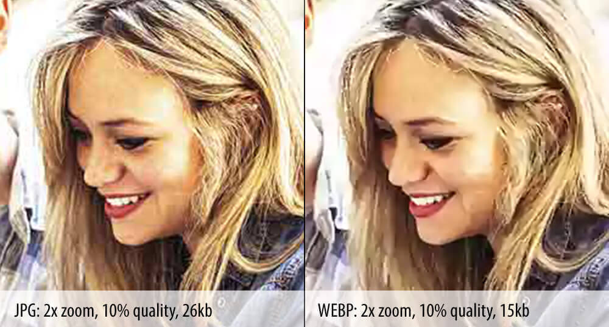

формат изображения jpg 375 КБ|
|
формат изображения png 1,3 МБ|
|
формат изображения webp 224 КБ|
|

WebP — формат сжатия изображений с потерями и без потерь качества, предложенный компанией Google Inc. в 2010 году. Основан на алгоритме сжатия неподвижных изображений (ключевых кадров) из видеокодека VP8. Использует контейнер RIFF.
Для работы с данным форматом существует открытое программное обеспечение, в частности, библиотека libvpx и конвертер webpconv.
Более быстрое время загрузки — из-за меньшего размера файлов страницы с изображениями WebP загружаются быстрее. Это огромный импульс для получения удовольствия от сайта: по данным эксперта по созданию веб-сайтов, каждая секунда задержки загрузки снижает удовлетворенность посетителей на 16%, и каждый четвертый посетитель полностью покинет вас, если он не загрузится за 4 секунды.
Меньший объем памяти — Улучшенное сжатие WebP также означает меньше места для хранения. Это очень важно для сайтов, на которых размещено большое количество изображений, и может даже сэкономить деньги на вашем веб-хостинге.
Прозрачность и анимация . Как мы упоминали выше, WebP — единственный формат изображения, который поддерживает прозрачный фон PNG и возможности анимации GIF, не говоря уже о том, что он превосходит сжатие JPEG.
Поддерживается не всеми браузерами — хотя WebP имеет львиную долю браузеров, некоторые все еще не поддерживают его (Internet Explorer медленно принимает его, что является фирменным для Internet Explorer). Существует обходной путь, который включает создание резервного изображения в HTML, но создание целого другого файла в качестве резервной копии иногда сводит на нет все дополнительное пространство для хранения, которое вы экономите с помощью WebP в первую очередь.
Качество все еще снижается — Это не столько недостаток WebP, сколько недостаток любого сжатия с потерями, качество вашего изображения все равно снижается. Для большинства людей эта сумма ничтожна, но для визуальных сайтов, таких как фотографии или портфолио графического дизайна, вам нужно максимальное качество изображения.